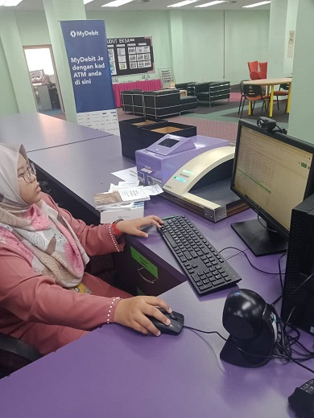

My Experiences
| The most unforgotten experience that I have been through was when I get practical in Perpustaan Tun Dr. Ismail (PTDI) UiTM Segamat. PTDI has 2 libraries which called PTDI 1 and PTDI 2. There are many things that I have learned during the fieldwork especially the librarian scope of work such as newspaper indexing, make a call number, submit the article journal into the system, and etc. | ||
| On the first day, my partner and I need to report on duty at the 'Bahagian Penyelidikan & Jaringan Industri (BPJI) to get our punch card. There was a funny moment when my partner and I have been waiting in front of PTDI 2 while we need to enter PTDI 1. At that time, we did not know that UiTM Segamat has two libraries. After waiting about an hour, we enter PTDI 2 and meet Puan Siti Rozana ask for confirmation. She was shocked after seeing both of us.🤣🤣 As you can see from this picture, this is our first task after have a mini tour with the staff.This task are the simpliest one because we just need to rearrange the book according to their classification number and enter the data into the drive. | ||
|  | This is a picture when we in library services department which we have been asked to find 10 books and make the circulation by ourselves. | |
| This is the activities that have planned in February but we can only join activities on 16 and 28 days of the month.Usually any activities that will be held by PTDI UiTM Segamat virtually, PTDI UiTM Pasir Gudang will also participate. |  |
|
| Every practical student are given two days to conduct their own programme in the library. So, we have decided to make a Corporate Social Responsibility (CSR) programmewhich we donating a box that full with books that suits with secondary schools.Our target is our secondary school which are SMK Canossian Convent Segamat and SMK Tenang Stesen Segamat. Due to limited time, we successfully completed the programme in the same day. unknowingly, my friend and I wore baju kurung with the same color theme from the hijab to the shoes, even our face mask is in the same color code.🤭🤭 | ||
| PTDI organized gotong-royong activities to upgrade the library's section arrangement in preparation for the opening of the new semester. This activities have been held for 3 days a row. | ||
| After a break from rearranged the library's section, PTDI has a guest name Dr. Ghazali Mohamed Fadzil. He shared his experience about the library's environment and management. | ||
| Before the practical session end, I have been asked to be a part of the library's video for the orientation week. The video has been posted in UiTM Johor Youtube channel which have 568 views. | ||
| On the last day of library fieldwork, PTDI held a farewell dinner and a little gift for both of us. |